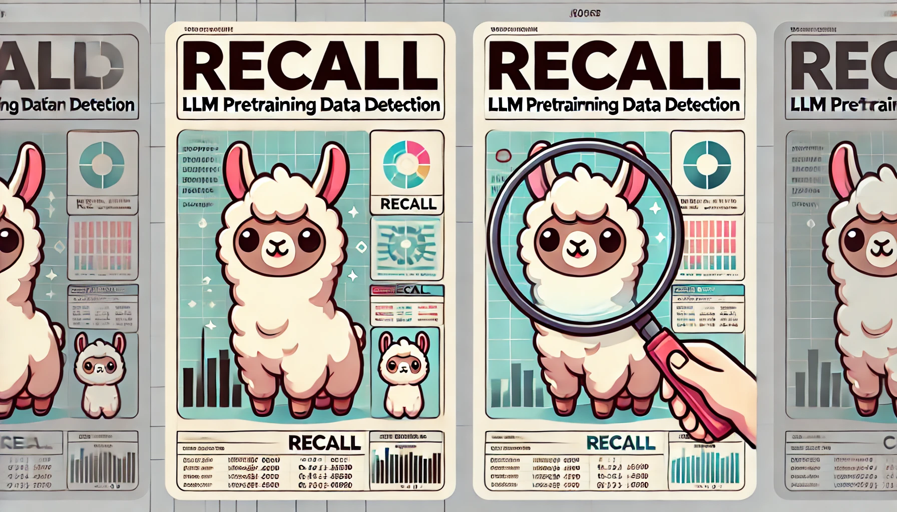
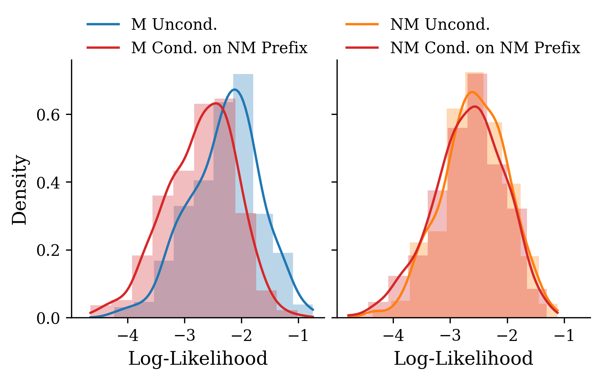
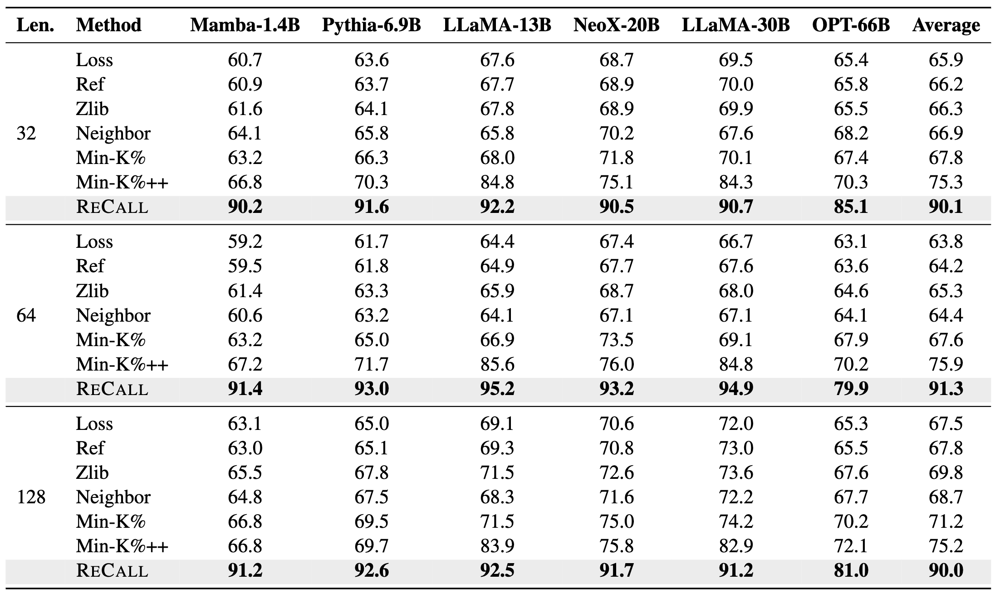
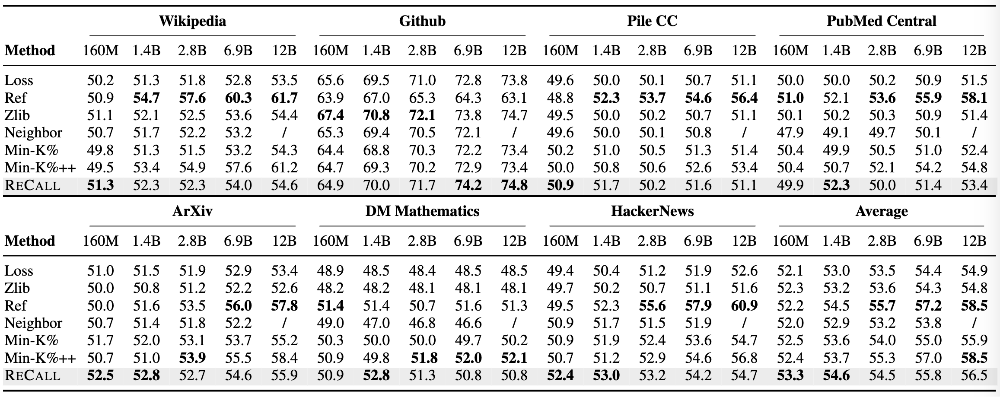

ReCaLL is a novel membership inference attack (MIA) method designed to detect pretraining data in large language models (LLMs). It leverages the conditional language modeling capabilities of LLMs to identify whether a given piece of text was part of the model's training data.

Image generated by DALL-E
Key Idea 💡
The key idea behind ReCaLL is measuring the behavior of LLM when conditioning the target data point with a non-member context (prefix). The ReCaLL score, which is the ratio of the conditional log-Likelihood (LL) to the unconditional LL, is used to quantify this change.
As shown in the figure below, the log-likelihood decrease is more pronounced for member data (M) compared to non-member data (NM) when conditioned on non-member context.

LL comparison between members (M) and non-members (NM). Members experience a higher LL reduction than non-members when conditioned with non-member context.
One interpretation comes from prior work on in-context learning, which suggests that it has an effect similar to fine-tuning. By filling the context with non-members, we are essentially changing the predictive distribution of the language model. This change has a larger detrimental effect on members, which are already memorized by the model, compared to non-members, which the model is unfamiliar with regardless of the context.
How ReCaLL Works❓
ReCaLL operates by comparing the unconditional and conditional log-likelihoods of target data points:
Select a non-member prefix P
Compute the unconditional log-likelihood LL(x) for a target data point x
Calculate the conditional log-likelihood LL(x|P) of x given the prefix P
Determine the ReCaLL score as the ratio LL(x|P) / LL(x)
A higher ReCaLL score 📈 indicates more likely that the target data point being a member of the training set.
Main Results 🔝
Performance on WikiMIA 🥇
ReCaLL achieves state-of-the-art performance on the WikiMIA benchmark, consistently outperforming existing methods across different settings. On average, ReCaLL surpasses the runner-up method by 14.8%, 15.4%, and 14.8% in terms of AUC scores for input lengths of 32, 64, and 128, respectively.

Performance on MIMIR 🚀
On the more challenging MIMIR benchmark, ReCaLL demonstrates competitive performance. In the 13-gram setting, ReCaLL outperforms all baselines on average for 160M and 1.4B models. For the 7-gram setting, ReCaLL achieves the highest AUC on 1.4B, 2.8B, 6.9B, and 12B models.

MIMIR benchmark 13-gram setting results. ReCaLL outperforms all baselines on average for 160M and 1.4B models. Check out the 7-gram results here.
More Experiments 📋
Effectiveness with Different Prefixes
Our experiments show that ReCaLL is robust to random prefix selection and remains effective with synthetic prefixes generated by language models.
Ensemble Approach
We developed an ensemble method that further enhances ReCaLL's performance, particularly when dealing with longer texts that exceed the model's context window.
Token-level Analysis
Our in-depth analysis reveals valuable insights into how LLMs leverage membership information for effective inference at both sequence and token levels. We observed that the largest changes in log-likelihood occur in the beginning tokens, especially the first few.
Why Non-member Prefixes?
Using member prefixes not only presents an unrealistic assumption but also fails to yield the desired effect for detecting pretraining data. Our experiments demonstrate that LLMs show a stronger preference to continue with text from the same membership status.
@article{xie2024recall,
title={ReCaLL: Membership Inference via Relative Conditional Log-Likelihoods},
author={Xie, Roy and Wang, Junlin and Huang, Ruomin and Zhang, Minxing and Ge, Rong and Pei, Jian and Gong, Neil Zhenqiang and Dhingra, Bhuwan},
journal={arXiv preprint arXiv:2406.15968},
year={2024}
}